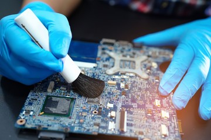

É muito comum que as pessoas tenham dúvida sobre limpar ou não a placa-mãe. A resposta é que sim, você deve fazer a limpeza da sua placa-mãe. Isso porque, apesar dela ficar protegida dentro do seu gabinete, ela não fica imune de poeira e outros resíduos.
Esse excesso de resíduos pode impactar diretamente no seu funcionamento. Dessa forma, uma placa-mãe suja está muito mais sujeita a travamentos, desligamentos e até a algum dano mais fatal.
Abrindo o computador da forma correta
Em primeiro lugar, comece desligando o seu computador. Isso é vital tanto para a sua segurança quanto para a segurança da sua máquina.
Em seguida, retire todos os parafusos da parte traseira do gabinete usando uma chave philips. Aqui, uma dica importante é deixar todos os parafusos separados e identificados. Assim, você não corre o risco de perder algum deles. Feito isso, retire as tampas laterais que protegem o gabinete.
Para tocar nas peças internas, o ideal é usar uma luva anti estática. Dessa forma, você não corre o risco de danificar algum circuito com a eletricidade estática das suas mãos.
Desconectando os componentes da placa-mãe
O próximo passo é desconectar tudo que está ligado à placa-mãe. Uma dica importante, aliás, é fotografar a placa-mãe de todos os ângulos possíveis. Dessa forma, você vai ter um guia para montá-la novamente no final da limpeza.
Você deve começar pelo cooler do processador. Usando uma chave de fenda, solte as travas que estão prendendo ele a placa-mãe. Em seguida, destrave cada uma dessas travas e desconecte o cabo de energia que o conecta à placa-mãe. Depois disso, retire todos os fios conectados.
Além disso, você vai precisar desconectar a fonte de alimentação. Nesse momento, muito cuidado é necessário. Isso porque estamos falando de uma peça pesada, que pode quebrar a placa-mãe caso seja solta de qualquer jeito. Por isso, segure ela com firmeza na hora de soltar os parafusos que prendem ela ao gabinete.
Por último, retire a placa de vídeo. Para isso, basta tirar os parafusos que prendem a placa-mãe e depois puxar ela. Sempre com muito cuidado.
Como limpar placa-mãe:
Limpando com o pincel
Em primeiro lugar, é necessário que seja um pincel de certas longas e macias. Assim, você não agride a placa-mãe. Em segundo lugar, ele deve estar totalmente seco. Afinal, umidade não é uma coisa que combina com circuitos.
Para fazer uma boa limpeza, inclusive, você deve fazer movimentos leves e delicados. O objetivo é varrer a poeira para fora da peça e não esfregá-la. Dessa forma, você pode passar o pincel por toda a placa-mãe, desde que faça isso com cuidado.

Limpando com álcool isopropílico
O único álcool que deve ser usado para limpeza de equipamentos eletrônicos é o álcool isopropílico. Isso porque ele não contém água, além de evaporar com mais facilidade. Aliás, o álcool de cozinha, ou álcool 70 como muitos conhecem, não é isopropílico. Esse é o álcool etílico, que você deve manter bem longe da sua placa-mãe.
De toda forma, com o álcool isopropílico em mãos, basta espalhar o produto pela placa. Se atente para usar uma quantidade que seja suficiente, mas que não seja exagerada.
Por fim, basta usar o mesmo pincel usado anteriormente para espalhar o álcool por toda a placa-mãe. Lembre-se, no entanto, de limpar ele antes do processo. Além disso, é preciso também esperar que o álcool seque completamente.